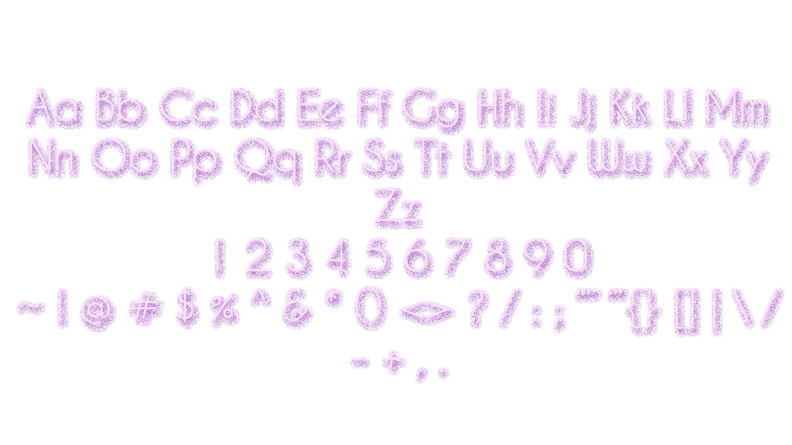
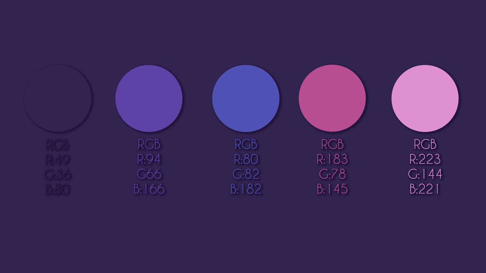

This logo is based on three elements, which are magnifying lens, the clock and also some squre granule, which located at the handle of the magnifying lens. These three elements represent three basic components of big data, volume, variety, and velocity. Tones of data coming together to form big data, which allows people to calculate and get a more accurate statistical result with time-efficient.
he font I chose for this project is called Caviar Dreams, which created by Lauren Thompson and be published on DaFont website in 2014. The format of it is .ttf, which can be supported across all browsers. For maintain consistency and keep the concise style in this project, I will only use this font and its derivatives font into this website.
